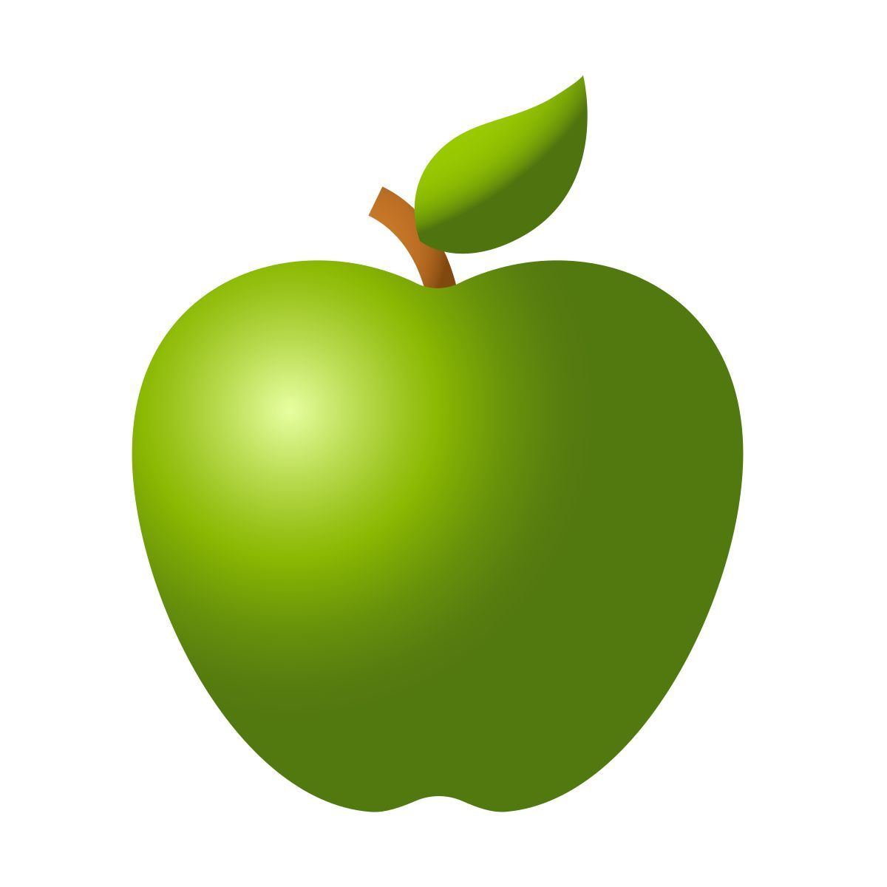
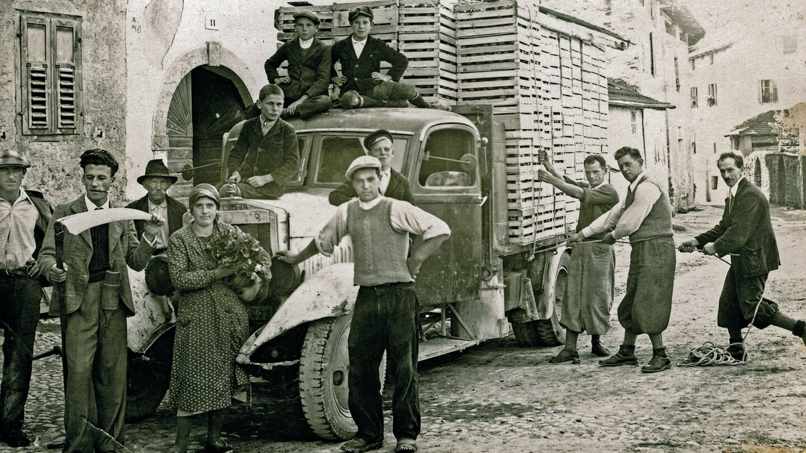
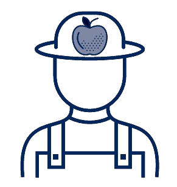
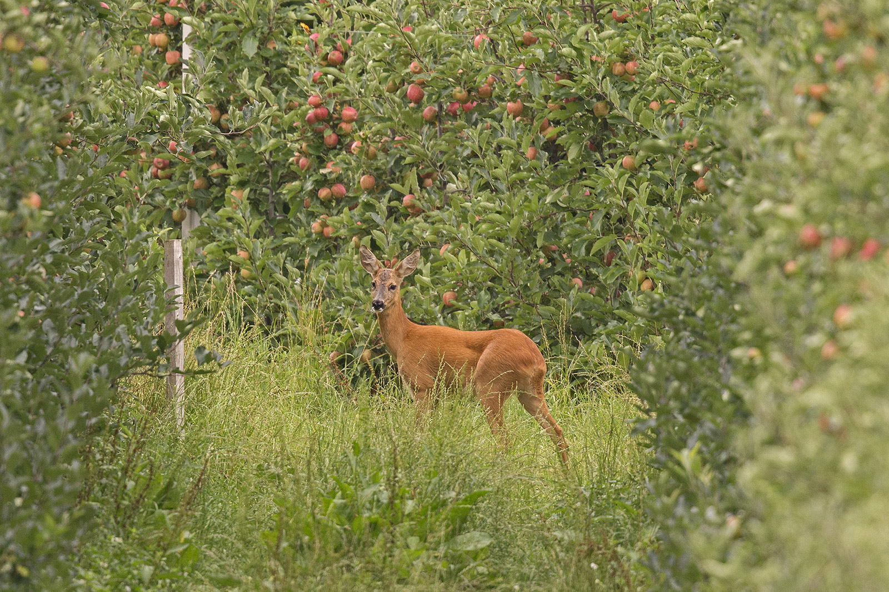
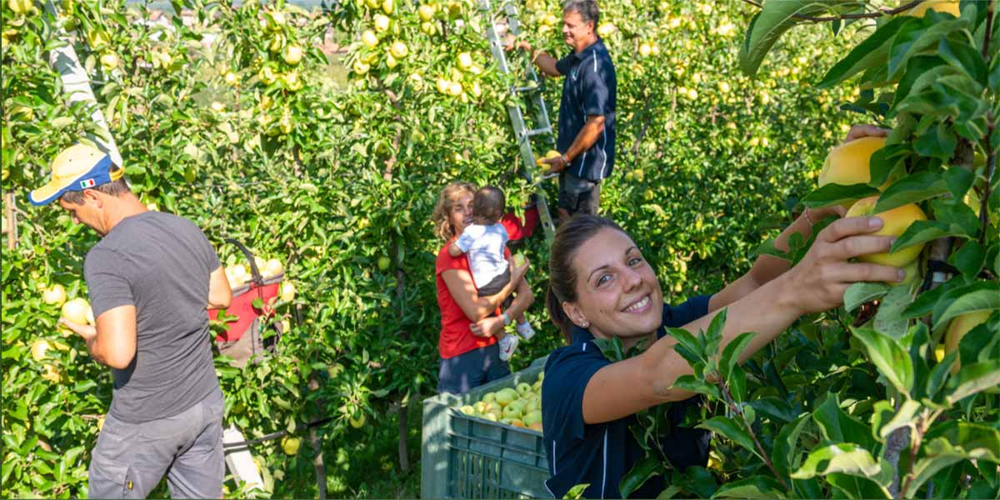
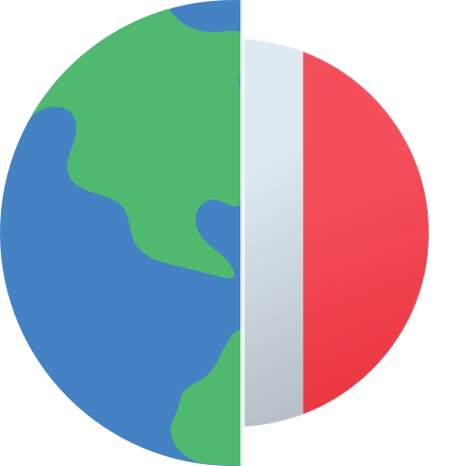

Un impegno concreto
Il Consorzio Melinda rappresenta una realtà di riferimento del settore primario italiano, con oltre 4.000 famiglie di frutticoltori attive nelle Valli del Noce, in Trentino. In agricoltura, la qualità del suolo, la disponibilità d'acqua, la biodiversità e la stabilità climatica incidono direttamente sui risultati produttivi: per questo la sostenibilità è al centro delle scelte del Consorzio, sia per garantire risultati ai soci sia per preservare il territorio in cui operano. L'impegno si sviluppa su tre direzioni: economica, per assicurare redditività ai soci e valore per la filiera; ambientale, tramite energie rinnovabili, celle ipogee e agricoltura biologica; sociale, con attenzione alle persone, alla formazione e al rapporto con la comunità.
Economia e mercato
Le performance commerciali delle mele Melinda e dei prodotti trasformati confermano la solidità del modello cooperativo: 1.438 dipendenti, ricavi per 276 milioni di euro e oltre 152 milioni liquidati direttamente ai soci frutticoltori nell'esercizio 2021-2022. Il valore liquidato rappresenta il compenso proporzionale ai chilogrammi conferiti e alla qualità del prodotto, secondo criteri condivisi e verificabili dall'intera base sociale. Accanto alle varietà storiche Golden, Renetta e Gala, il Consorzio investe in colture ad alto potenziale commerciale: la crescita di Evelina e l'introduzione di nuove linee come Enjoy, Morgana e SweeTango rafforzano il percorso di innovazione e diversificazione dell'offerta.
| Mele Vendute | 2018-2019 | 2019-2020 | 2020-2021 | 2021-2022 |
|---|---|---|---|---|
|
 Chilogrammi |
419.503.623 | 339.050.861 | 421.782.974 | 416.130.801 |
Dalla Terra al Mercato
Nato nel 1989 dall'unione di 16 cooperative e oltre 4.000 famiglie di frutticoltori, il Consorzio gestisce circa 400.000 tonnellate di mele all'anno secondo un modello di economia circolare: il prodotto non idoneo al mercato fresco viene valorizzato in succhi, mousse e snack, riducendo gli scarti e generando valore lungo la filiera. La collaborazione con APOT ha contribuito a ottimizzare i processi e migliorare le performance ambientali dell'intera catena produttiva. L'investimento in varietà resistenti alle malattie ha portato la superficie coltivata da 11 a 99 ettari tra il 2016 e il 2021, riducendo sensibilmente i trattamenti fitosanitari. Le vendite superano i 300 milioni di euro, con il 24% esportato in oltre 60 Paesi.

Economia circolare e Indotto
Melinda adotta un modello economico orientato alla sostenibilità perché ridistribuisce una quota rilevante del valore generato. La ricchezza derivante dalla commercializzazione delle mele viene reinvestita sul territorio: oltre l'80% del valore complessivo ritorna alle Valli del Noce, attraverso pagamenti ai soci, acquisti da fornitori locali e salari. Il sistema economico della mela coinvolge il 26% della popolazione residente, con 4.179 aziende e oltre 14.000 addetti nell'indotto diretto e indiretto, con una concentrazione di imprese e servizi circa tripla rispetto alla media nazionale.
| Valore in Euro | 2019-2020 | 2020-2021 | 2021-2022 |
|---|---|---|---|
| Generato | 302.212.976 | 337.421.603 | 278.392.387 |
| Distribuito | 300.802.642 | 335.969.372 | 277.352.239 |
| Trattenuto | 1.410.334 | 1.452.231 | 1.070.148 |
| Impatto sul Territorio | |
|---|---|
| Abitanti Valli Noce | 58.015 |
| Soci Melinda | 4.000 |
|
 Dipendenti diretti |
1.500 |
| Persone indotto | 14.000 |
Ambiente e Apicoltura
Nelle Valli del Noce i meleti occupano solo l'8,2% della superficie, mentre l'87,7% è coperto da boschi e pascoli che preservano la biodiversità del territorio. Questo equilibrio è monitorato attraverso l'indice QBS-ar, che analizza i microartropodi nei primi centimetri del suolo: nei 52 rilievi eseguiti nel 2020 è stato registrato un valore medio di 140 su 160, nella fascia di qualità biologica più alta, base per la certificazione Biodiversity Alliance. La cura costante dei terreni da parte dei frutticoltori stabilizza i pendii: dal 2001 al 2018 le zone colpite da frane sono cresciute solo dello 0,6%, con un risparmio stimato in oltre un milione di euro annui in costi di prevenzione. Le api sono un indicatore diretto di questo equilibrio: il Consorzio posiziona 1-2 arnie per ettaro di frutteto, in un rapporto di mutuo beneficio tra impollinazione e produzione.
| Apicoltura | 2019 | 2020 | 2021 |
|---|---|---|---|
| Apicoltori | 260 | 285 | 315 |
| Arnie | 3.937 | 4.179 | 4.531 |
Piano Biologico

Con il Piano Bio, avviato nel 2008, e le Oasi Biologiche della Val di Non, Melinda è diventata la principale realtà biologica del Trentino: dagli appena 70 ettari certificati nel 2018 si è arrivati a 301 ettari nel 2021, con altri 70 in fase di conversione. Il Piano supporta i soci con finanziamenti dedicati e formazione specializzata. Parallelamente, sono state introdotte nuove varietà resistenti alla ticchiolatura come Morgana, Gradisca, SweeTango, Galant e Isaaq: la resistenza naturale a questa patologia riduce i trattamenti fitosanitari e abbassa i costi di produzione, rendendo il modello biologico più accessibile.
| Certificazione | 2018 | 2020 | 2021 |
|---|---|---|---|
| Ettari Bio | 70 | 240 | 301 |
Energia Sostenibile e Celle Ipogee
Il Consorzio copre il 100% del fabbisogno energetico da fonti rinnovabili: il 90,29% da energia idroelettrica e il 9,71% da pannelli fotovoltaici installati sui tetti degli impianti. Nel 2021-2022 la produzione fotovoltaica ha raggiunto 5.542.734 kWh, di cui 4.348.965 kWh autoconsumati e 1.193.769 kWh ceduti al Gestore Servizi Energetici. Le celle ipogee di Rio Maggiore, cavità scavate a 300 metri di profondità nella montagna, sfruttano le proprietà isolanti naturali della roccia per la conservazione delle mele, riducendo il consumo energetico del 30% rispetto alle celle tradizionali, con un risparmio stimato di 12 GWh annui. Sul fronte idrico, i sistemi di irrigazione a goccia abbattono i consumi del 30% rispetto ai sistemi sovrachioma, mentre il sistema ECORECYCLING a circuiti chiusi ricicla tra 100 e 200 m³ d'acqua al giorno durante la lavorazione.
| Consumo Fonti Energetiche | |
|---|---|
| Energia Idroelettrica | 90,29 % |
| Autoproduzione Fotovoltaica | 9,71 % |
Etica e Società

Il contributo femminile è centrale nell'organizzazione aziendale. Le donne rappresentano i due terzi del personale e sono il cardine del sistema di lavorazione e confezionamento. Il Consorzio garantisce la parità retributiva a parità di ruolo e adotta strumenti concreti di conciliazione vita-lavoro, tra cui il part-time per le lavoratrici madri. Ogni anno si attivano circa 10.000 contratti stagionali, il 75% dei quali provenienti dall'estero, prevalentemente dall'Europa orientale, nelle fasi di diradamento e raccolta tra giugno e ottobre. In molti casi le stesse persone tornano ogni anno, consolidando legami stabili con le famiglie ospitanti e contribuendo all'integrazione nel territorio trentino.
La Formazione: un investimento per il futuro
La formazione è considerata un investimento strategico. Il 100% dei dipendenti riceve formazione annuale, di cui il 98% su temi di sicurezza, coordinata con l'ASL di Trento e i medici competenti. Nel 2021-2022 sono state erogate 198 ore su frigoconservazione e 266 ore su macchinari. Parallelamente, APOT ha formato 5.386 addetti e soci frutticoltori attraverso 7 corsi tecnici nel 2022, direttamente sul campo. Il modello retributivo adottato prevede una componente fissa e una variabile collegata al raggiungimento di obiettivi concordati annualmente.
| Dati Formazione 2021-2022 | |
|---|---|
| Addetti formati da APOT | 5.386 |
| Ore su Frigoconservazione | 198 h |
| Ore su Macchinari | 266 h |
Agriturismo Melinda
La Val di Non, oltre a essere la culla delle mele Melinda, è un contesto paesaggistico di grande valore con altopiani coltivati, canyon, castelli e borghi storici. Attraverso il progetto Agritur Ambasciatori di Melinda, 20 strutture agrituristiche gestite dalle famiglie dei soci offrono ai visitatori un'esperienza diretta nel territorio. Iniziative come la festa Pomaria e il Golden Theatre si affiancano a un modello di ospitalità a basso impatto. I dati mostrano una crescita costante: dopo la flessione del 2020 dovuta alla pandemia, il 2022 ha registrato il record storico con oltre 62.000 presenze.
| Visitatori | 2020 | 2021 | 2022 |
|---|---|---|---|
| Italiani | 32.878 | 40.293 | 48.647 |
| Stranieri | 3.733 | 7.286 | 13.882 |
|
 Totale |
36.611 | 47.579 | 62.529 |
Il futuro nei meleti
Il Consorzio guarda al futuro su basi già consolidate: dal 1996 i soci hanno progressivamente adottato una frutticoltura integrata e sostenibile sottoposta a controlli scientifici. In collaborazione con l'Università di Trento e la Fondazione Edmund Mach, vengono impiegati droni eye scab per individuare precocemente la ticchiolatura e intervenire solo sulle piante a rischio. Il sistema S.O.PH.I.A. estende questo approccio all'intera gestione fitosanitaria, con l'obiettivo di coprire 300 ettari entro il 2026. La funivia delle mele, inaugurata nel 2025, è un impianto di 1.340 metri che collega la sala di lavorazione alle celle ipogee evitando circa 5.000 camion annui nella valle, alimentata interamente da fonti rinnovabili. Entro il 2026 è prevista anche la costruzione di LCA specifiche per misurare l'impatto ambientale di ogni formato di imballaggio lungo l'intera catena del valore.
Bilancio di Sostenibilità 2023
Tutti gli indicatori e gli obiettivi descritti in questa pagina sono tratti dal Bilancio di Sostenibilità 2023 del Consorzio Melinda, redatto secondo i GRI Standard 2021 e disponibile in formato PDF.
Scarica il Report in PDF